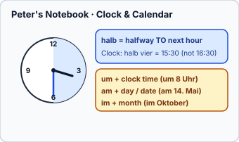

Time, Days, Months and Dates
Learn with an AI tutor
An AI tutor explains this page to you and helps you with the exercises. Choose your assistant:
Open with Claude Open with ChatGPT Open with Mistral Vibe
You use your own account with the provider. The assistant is not offered by lernapps.net: lernapps only provides the content and the exercises. The choice holds for all pages, on this device only.
Watch Out for 'halb drei'!
After this page you can tell formal and informal time and use days, months, and dates in German. Lukas tells Peter: 'Wir treffen uns um halb drei im Stadtpark.' In German, halb always looks forward to the upcoming hour!
Exercise
Solution
2:30 p.m. (14:30) right answer
halb drei = halfway to three, so 2:30 p.m. (14:30).
3:30 p.m. (15:30)
3:30 p.m. is 'halb vier' (halfway to four) in German.
3:00 p.m. (15:00)
3:00 p.m. is simply 'drei Uhr' without 'halb'.
In German, 'halb' always means 30 minutes before the named hour.
Clock Times, Weekdays and Months

© CC0-1.0Peter's Notebook: halb looks forward, and um/am/im structure schedules.
| Clock | Official (24h) | Everyday |
|---|---|---|
| 08:15 | acht Uhr fünfzehn | Viertel nach acht |
| 15:30 | fünfzehn Uhr dreißig | halb vier |
| 16:45 | sechzehn Uhr fünfundvierzig | Viertel vor fünf |
Days, Months and Dates in Germany
Days: Montag (Monday), Dienstag (Tuesday), Mittwoch (Wednesday), Donnerstag (Thursday), Freitag (Friday), Samstag (Saturday), Sonntag (Sunday). Months: Januar, Februar, März, April, Mai, Juni, Juli, August, September, Oktober, November, Dezember. Dates: use a dot + am (am 14. Mai = on 14 May, am 3. Oktober = on 3 October).
Practice Times and Dates
Exercise
Solution
Right answer: Viertel nach neun – 09:15; halb acht – 07:30; Viertel vor elf – 10:45; halb sechs – 17:30
Viertel nach = :15, halb = :30 before the named hour, Viertel vor = :45.
Exercise
Choose the right preposition (um, am, im) for Peter's calendar.
- Football practice is on Monday. → Das Fußballtraining ist … Montag.
- Class starts at 8:00. → Der Unterricht beginnt … 8:00 Uhr.
- Peter's birthday is on 14 May. → Peter hat … 14. Mai Geburtstag.
- The autumn break is in October. → Die Ferien sind … Oktober.
Solution
- Das Fußballtraining ist am Montag.
- Der Unterricht beginnt um 8:00 Uhr.
- Peter hat am 14. Mai Geburtstag.
- Die Ferien sind im Oktober.
Remember: um + clock time, am + day/date, im + month.
Exercise
Fill in the missing weekdays and months in Nadia's plan.
Hint
Weekdays and months are nouns in German, so always capitalize them.
- On Wednesday I have swimming. → Am … habe ich Schwimmen.
- On Saturday we go to the park. → Am … gehen wir in den Park.
- In January it is cold in Germany. → Im … ist es in Deutschland kalt.
Solution
- Am Mittwoch habe ich Schwimmen.
- Am Samstag gehen wir in den Park.
- Im Januar ist es in Deutschland kalt.
Well done! Peter's calendar is ready. Next, Peter unpacks his school things in Herr Braun's class.
Found a mistake or have an idea for this app?